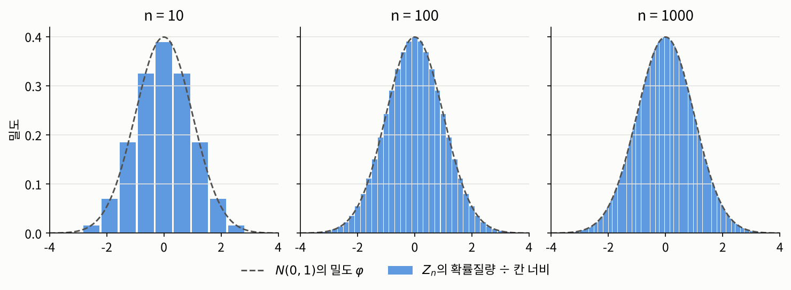

1.4 분포수렴
1장 확률변수가 가까워진다는 것 · 오차는 어떤 모양으로 흩어지는가
들어가며
1.3에서 동전의 앞면 비율은 평균적으로 \(\frac{1}{2\sqrt{n}}\)만큼 틀린다는 것을 보았습니다. 오차가 \(0\)으로 줄어든다는 것은 이제 충분히 확인했으니, 이번에는 질문을 바꿔 보겠습니다. 오차는 어떤 모양으로 흩어질까요? 오차가 \(0.05\)를 넘을 확률이 정확히 얼마인지, 95%의 확률로 오차가 들어가는 범위가 어디까지인지를 알려면 평균적인 크기만으로는 부족하고, 오차의 분포를 알아야 합니다.
문제는 오차 \(\bar{X}_n - \tfrac12\) 자체는 \(0\)으로 줄어들기 때문에, 그대로 들여다보면 모양이 한 점으로 찌그러져 버린다는 것입니다. 그래서 현미경의 배율을 높이듯 오차를 확대해서 봅니다. 평균적인 크기가 \(\frac{1}{2\sqrt{n}}\)이므로, 그 역수인 \(2\sqrt{n}\)배로 확대하면 크기가 \(n\)에 상관없이 일정해집니다.
\[Z_n := 2\sqrt{n}\,\big(\bar{X}_n - \tfrac12\big) = \frac{S_n - \frac{n}{2}}{\sqrt{n/4}} = \frac{S_n - E(S_n)}{\sqrt{V(S_n)}}\]
\(Z_n\)은 합 \(S_n\)을 평균이 \(0\), 분산이 \(1\)이 되도록 맞춘 표준화된 합입니다. 이번 글에서는 이 \(Z_n\)의 모양이 어디로 가는지 살펴보고, 그 과정에서 필요한 분포수렴(convergence in distribution)을 정의하겠습니다.
확대한 오차의 모양
\(Z_n\)은 \(\frac{k - n/2}{\sqrt{n/4}}\) (\(k = 0, 1, \ldots, n\))라는 값을 이항분포의 확률로 가집니다. 이 확률을 칸 너비로 나누어 밀도처럼 그리고, 표준정규분포 \(N(0, 1)\)의 밀도 \(\varphi\)와 겹쳐 보겠습니다.

\(n\)이 커질수록 막대가 종 모양의 곡선에 들러붙습니다. 숫자로도 확인해 보겠습니다. 표준정규분포의 분포함수를 \(\Phi\)라 하고, \(Z_n\)의 분포함수 \(F_n(x) := P(Z_n \le x)\)와 \(\Phi\)가 가장 크게 벌어지는 정도 \(\sup_x |F_n(x) - \Phi(x)|\)를 이항분포로 정확히 계산합니다. \(F_n\)은 계단함수이므로, 이 최댓값은 계단이 뛰는 점에서 뛰기 직전과 직후의 값을 비교하면 얻을 수 있습니다.
import numpy as np
from scipy.stats import binom, norm
print(" n | P(Z_n ≤ 1.96) | Φ(1.96) | sup_x |F_n(x) - Φ(x)|")
for n in [10, 100, 1000, 10_000]:
k = np.arange(n + 1)
z = (k - n / 2) / np.sqrt(n / 4) # Z_n = (S_n - n/2) / sqrt(n/4)가 가질 수 있는 값
F = binom.cdf(k, n, 0.5) # 점프한 뒤의 값 F_n(z_k)
F_left = F - binom.pmf(k, n, 0.5) # 점프하기 직전의 값 F_n(z_k -)
dist = max(np.max(np.abs(F - norm.cdf(z))), np.max(np.abs(F_left - norm.cdf(z))))
p196 = binom.cdf(np.floor(n / 2 + 1.96 * np.sqrt(n / 4)), n, 0.5)
print(f"{n:>6} | {p196:>13.4f} | {norm.cdf(1.96):.4f} | {dist:.4f}") n | P(Z_n ≤ 1.96) | Φ(1.96) | sup_x |F_n(x) - Φ(x)|
10 | 0.9893 | 0.9750 | 0.1230
100 | 0.9716 | 0.9750 | 0.0398
1000 | 0.9732 | 0.9750 | 0.0126
10000 | 0.9756 | 0.9750 | 0.0040두 분포함수가 가장 크게 벌어지는 정도는 \(n\)을 100배 늘릴 때마다 대략 10분의 1이 됩니다. 이 차이가 적어도 \(1/\sqrt{n}\)의 속도로 줄어든다는 것은 4장에서 볼 베리-에센 정리가 보장해 줍니다.
그런데 이렇게 분포가 가까워진다고 해서 \(Z_n\) 자체가 어떤 확률변수에 가까워지는 것은 아닙니다. \(Z_n\)과 \(Z_{2n}\)을 비교해 보겠습니다. \(Z_{2n}\)은 처음 \(n\)번과 나중 \(n\)번의 결과를 합친 것이므로, 나중 \(n\)번만으로 만든 표준화된 합을 \(Z_n'\)이라 하면 \(Z_{2n} = (Z_n + Z_n')/\sqrt{2}\)이고, \(Z_n'\)은 \(Z_n\)과 독립이며 같은 분포를 따릅니다. 따라서
\[E\big((Z_{2n} - Z_n)^2\big) = \Big(\tfrac{1}{\sqrt2} - 1\Big)^2 + \Big(\tfrac{1}{\sqrt2}\Big)^2 = 2 - \sqrt{2} \approx 0.586\]
이 \(n\)에 상관없이 일정합니다. 나중 \(n\)번의 새로운 동전이 매번 \(Z_{2n}\)을 크게 흔들어 놓기 때문입니다. 그러니 \(Z_n\)은 평균제곱의 의미에서 어떤 극한에도 가까워지지 않고, 1.5의 도구를 쓰면 확률수렴도 하지 않는다는 것을 보일 수 있습니다. 가까워지는 것은 확률변수의 값이 아니라 분포뿐입니다. 그래서 분포만을 보는 수렴 개념이 따로 필요합니다.
분포수렴
분포가 가까워진다는 것을 분포함수가 가까워진다는 것으로 정의하는 것이 자연스러워 보입니다. 다만 한 가지 조심할 점이 있습니다.
질량 \(1\)이 오른쪽에서 \(0\)으로 다가오는 동안, 분포함수의 계단은 \(0\)의 바로 오른쪽에 있다가 극한에서 \(0\) 위로 올라섭니다. 계단이 정확히 어디에서 뛰는지는 극한에서 바뀔 수 있으므로, 극한 분포함수가 뛰는 점에서는 수렴을 요구하지 않는 것이 맞습니다.
정의에는 두 가지 눈여겨볼 점이 있습니다.
첫째, 분포수렴은 \(X_n\)과 \(X\)의 분포만 봅니다. 그래서 \(X_n\)들과 \(X\)가 서로 다른 확률공간 위에 있어도 상관없습니다. 거의 확실한 수렴, 확률수렴, 평균수렴은 모두 \(|X_n - X|\)를 계산해야 하므로 같은 확률공간이 필요했던 것과 대조적입니다. 같은 이유로 극한을 확률변수 대신 분포로 써서 \(X_n \xrightarrow{D} N(0, 1)\)처럼 쓰기도 합니다. “어떤 \(X \sim N(0,1)\)에 대해 \(X_n \xrightarrow{D} X\)”라는 뜻입니다.
둘째, \(F\)가 연속이 아닌 점은 셀 수 있는 개수밖에 없으므로, \(C_F\)는 \(\mathbb{R}\)에서 셀 수 있는 개수의 점만 뺀 집합입니다. 극한이 \(N(0,1)\)처럼 연속분포이면 \(C_F = \mathbb{R}\)이므로 모든 점에서 수렴을 요구하게 됩니다.
동전의 경우 위의 그림과 표가 보여 준 것은 다음 정리입니다. 증명은 특성함수를 이용하며 4장에서 다룹니다.
분포수렴을 다르게 보는 방법들
분포함수로 한 정의는 실수 위에서는 직관적이지만, 쓰기에는 불편할 때가 많습니다. 다음 정리는 같은 개념을 다른 언어로 바꿔 줍니다.
확률변수로 옮기면, 2는 \(X_n \xrightarrow{D} X\)일 필요충분조건이 연속이고 유계인 모든 \(f\)에 대해
\[E\big(f(X_n)\big) \to E\big(f(X)\big)\]
라는 것입니다. 이 형태는 분포함수가 없는 공간, 예컨대 \(\mathbb{R}^d\)나 함수들의 공간에서도 그대로 쓸 수 있어서, 분포수렴의 일반적인 정의로 쓰입니다. 4는 실용적으로 가장 많이 쓰는 형태입니다. 극한이 \(N(0,1)\)이면 모든 구간의 경계가 확률 \(0\)이므로, 큰 \(n\)에서
\[P(a < Z_n \le b) \approx \Phi(b) - \Phi(a)\]
로 근사해도 된다는 근거가 됩니다. 다만 4가 모든 집합에서 성립하는 것은 아닙니다. 예제 1.4.1에서 \(\mu_n(\{0\}) = 0\)은 \(\mu(\{0\}) = 1\)로 가지 않습니다. 이때 집합 \(\{0\}\)의 경계는 \(\{0\}\) 자신이고 극한 분포에서 확률이 \(1\)이므로 4의 조건에 맞지 않습니다.
확률수렴과의 관계
분포수렴은 분포만 보므로, 확률변수 자체가 가까워지는 확률수렴보다 약한 개념일 것으로 예상됩니다.
반대는 성립하지 않습니다. 분포가 같다고 값이 같은 것은 아니기 때문입니다.
하지만 극한이 상수라면 이야기가 달라집니다. 상수는 분포가 곧 값이기 때문입니다.
분포수렴을 다루는 두 도구
분포수렴은 덧셈과 잘 어울리지 않았지만, 연속함수와는 잘 어울립니다.
예를 들어 \(Z_n \xrightarrow{D} N(0,1)\)이므로 \(Z_n^2 \xrightarrow{D} Z^2\) (\(Z \sim N(0,1)\))이고, \(Z^2\)의 분포는 자유도 \(1\)인 카이제곱분포입니다. 사실 \(g\)가 가측이고 극한 분포에서 확률 \(0\)인 점들에서만 불연속이어도 같은 결론이 성립합니다.
덧셈 문제에 대한 해답은, 더하는 쪽 하나가 상수로 수렴하면 된다는 것입니다.
증명은 측도론적 확률론으로 미루겠습니다. 통계학에서 이 정리가 가장 많이 쓰이는 곳은 모르는 분산을 추정값으로 바꿔 넣을 때입니다. 동전의 앞면 확률 \(p\)를 모를 때, 정리 1.4.3에 따르면 \(\sqrt{n}(\bar{X}_n - p)/\sqrt{p(1-p)} \xrightarrow{D} N(0,1)\)인데, 분모의 \(p\)를 모르니 이 식을 그대로 쓸 수는 없습니다. 그런데 1.2의 정리 1.2.8에 의해 \(\hat\sigma_n := \sqrt{\bar{X}_n(1-\bar{X}_n)} \xrightarrow{P} \sigma := \sqrt{p(1-p)} > 0\)입니다. 극한이 상수일 때는 \(g\)가 그 상수에서만 연속이어도 같은 논리가 통하므로(\(|\hat\sigma_n - \sigma|\)가 작으면 \(|g(\hat\sigma_n) - g(\sigma)|\)도 작습니다), \(g(x) = \sigma/x\)를 쓰면 \(\sigma/\hat\sigma_n \xrightarrow{P} 1\)입니다. \(\bar{X}_n\)이 \(0\)이나 \(1\)이 되어 \(\hat\sigma_n = 0\)인 경우는 그 확률이 \(0\)으로 가므로 무시해도 됩니다. 이제 슬러츠키 정리의 곱셈을 쓰면
\[\frac{\sqrt{n}\,(\bar{X}_n - p)}{\sqrt{\bar{X}_n(1 - \bar{X}_n)}} \xrightarrow{D} N(0, 1)\]
입니다. 분모에 모르는 값이 없으므로 이 식으로 신뢰구간을 만들 수 있습니다. 여론조사의 “±3.1%포인트”가 이렇게 만들어지며, 4장에서 자세히 다룹니다.
정리
- 분포수렴은 확률변수의 값이 아니라 분포가 가까워지는 수렴이며, 분포함수가 극한 분포함수의 연속점에서 수렴하는 것으로 정의합니다. 연속점만 보는 이유는 질량이 한 점으로 다가가는 자연스러운 경우를 포함하기 위해서입니다.
- 분포수렴은 분포만 보므로 확률변수들이 서로 다른 확률공간 위에 있어도 됩니다. 동전의 오차를 \(2\sqrt{n}\)배 확대한 \(Z_n\)은 분포만 \(N(0,1)\)로 가까워지고, 값 자체는 어디로도 수렴하지 않습니다.
- 포르트망토 정리에 의해 분포수렴은 “연속이고 유계인 모든 \(f\)에 대해 \(E(f(X_n)) \to E(f(X))\)”와 같고, 경계의 확률이 \(0\)인 집합의 확률이 수렴한다는 것과도 같습니다.
- 확률수렴하면 분포수렴하지만 반대는 성립하지 않습니다. 다만 극한이 상수이면 둘은 같습니다.
- 연속함수는 분포수렴을 보존하고(연속 사상 정리), 상수로 수렴하는 항을 더하거나 곱해도 분포수렴은 유지됩니다(슬러츠키 정리).
이제 네 가지 수렴이 모두 나왔습니다. 마지막 글에서는 이들 사이의 관계를 한 그림에 모으고, 지금까지 여러 번 미뤄 둔 질문, 즉 확률수렴에서 언제 기대값의 수렴을 얻을 수 있는가에 답합니다.
연결되는 개념
- \(\leftarrow\) 이전 개념: 1.3 \(r\)차 평균수렴
- \(\rightarrow\) 다음 개념: 1.5 수렴들 사이의 관계